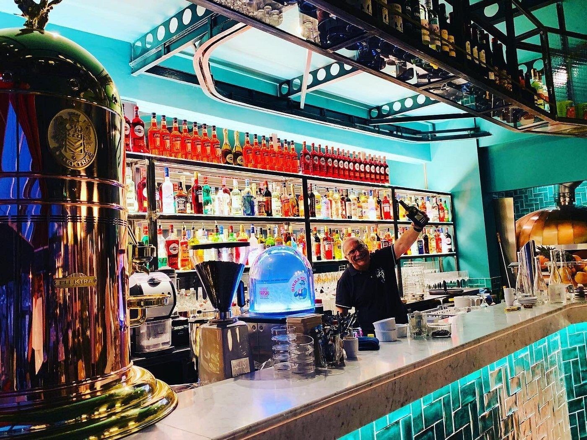
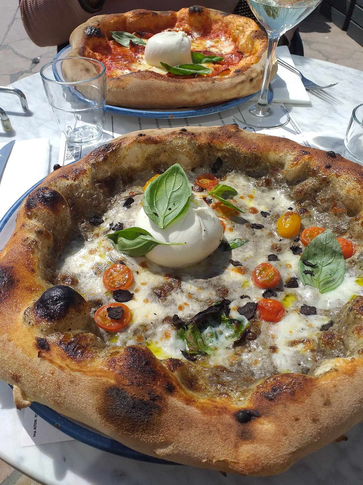
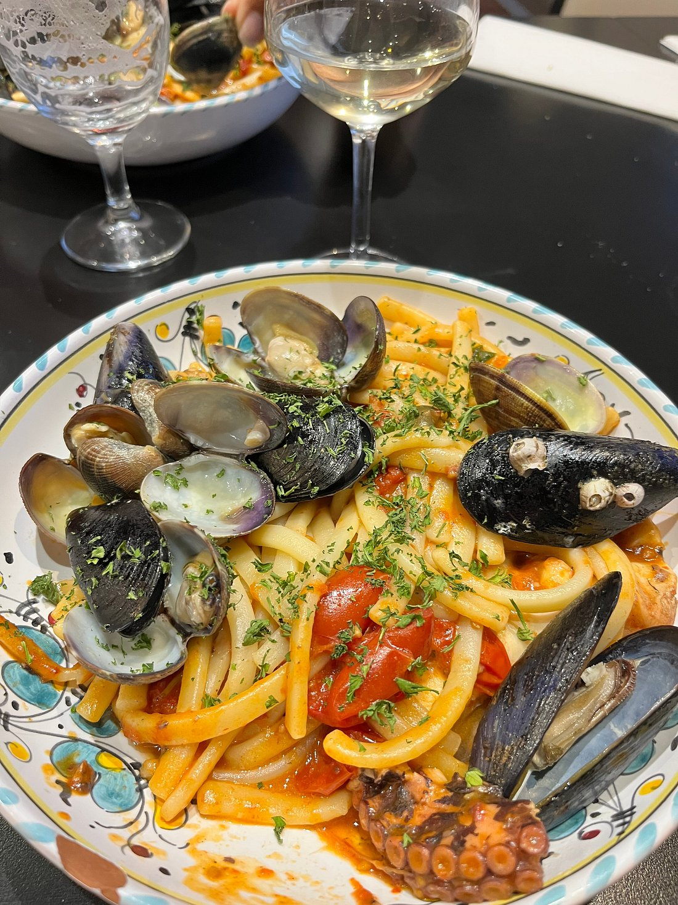
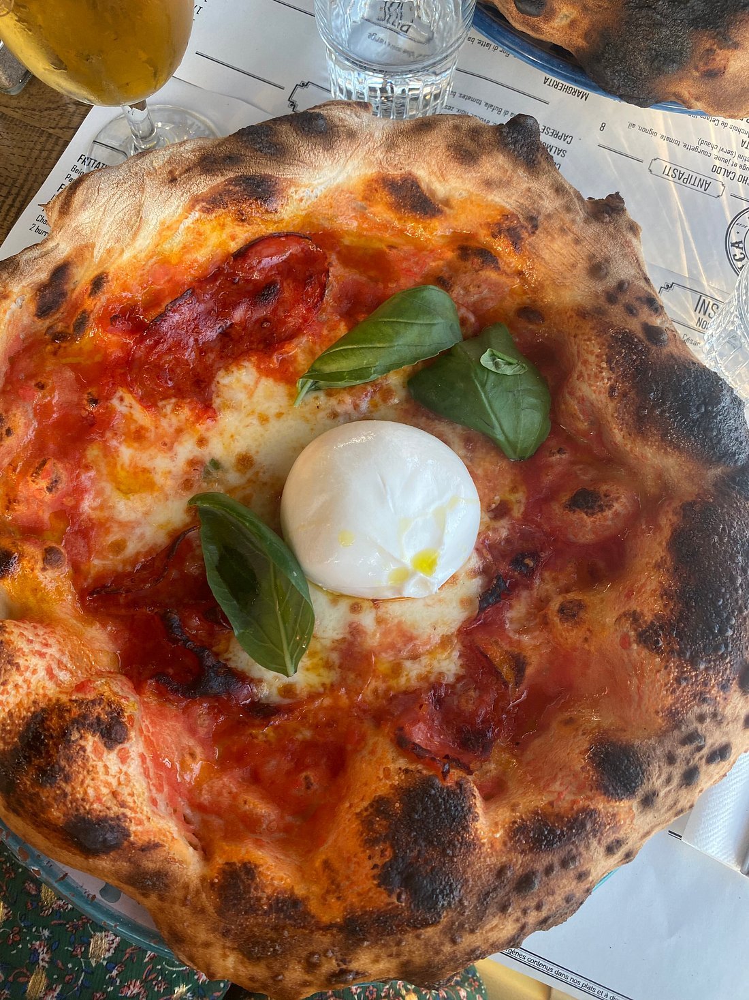
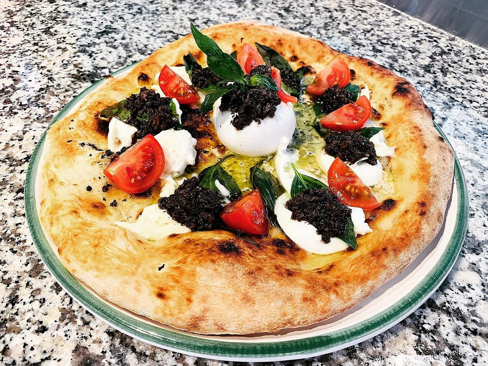
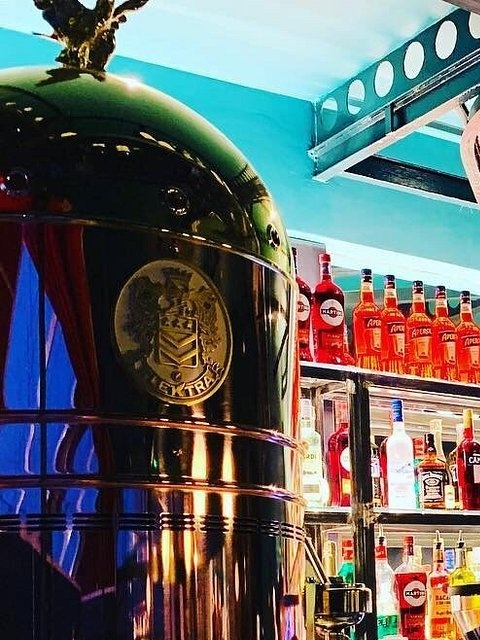
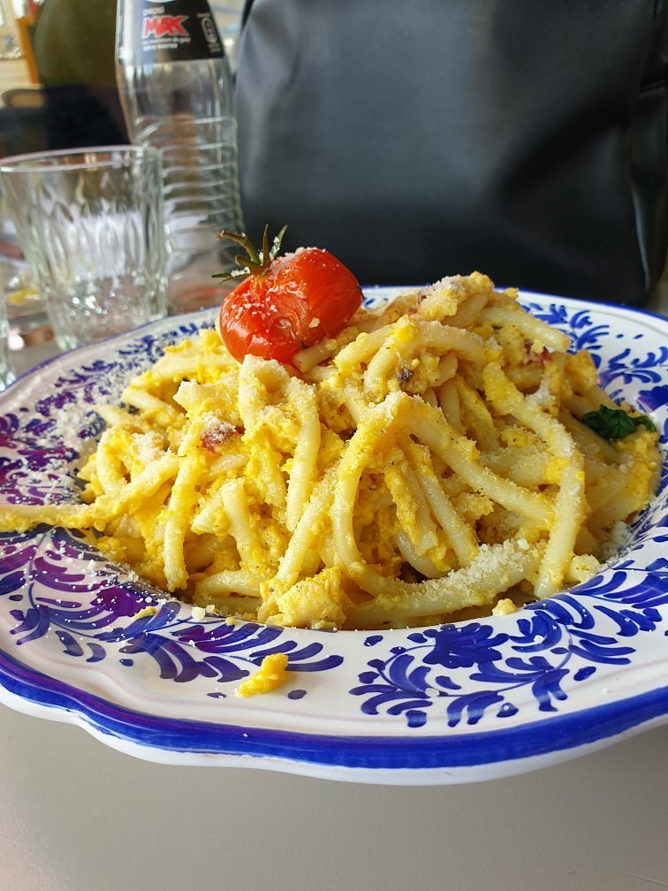
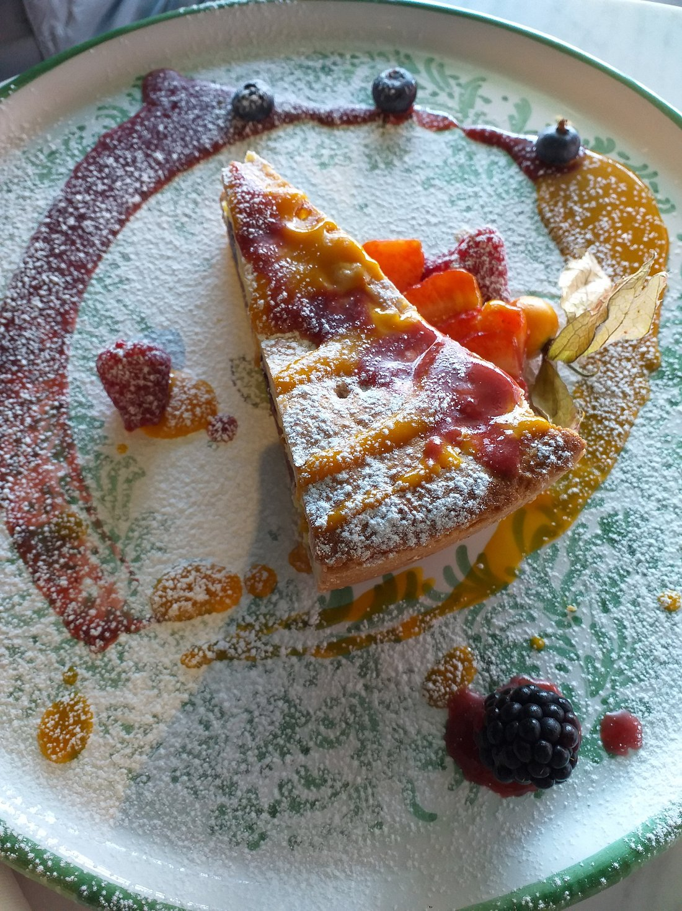
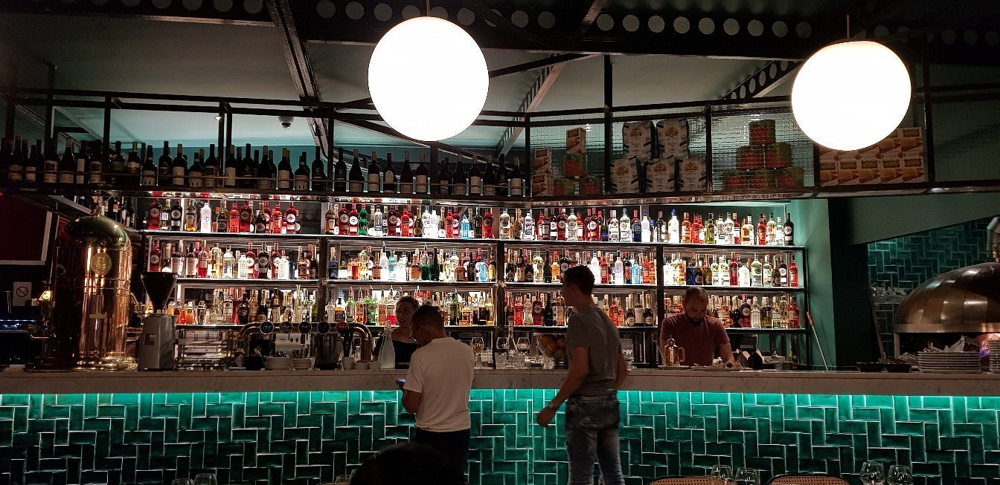

Une trattoria vivante sur le Quai Cronstadt
Niché au 304 Quai Cronstadt, Manofica propose une cuisine napolitaine franche et généreuse, rythmée par la lumière de la rade de Toulon.
Dehors, la terrasse fleurie de bougainvilliers et de citronniers accueille les déjeuners au soleil et les apéritifs au coucher du jour. Dedans, un bar monumental en zellige vert émeraude, un comptoir en marbre blanc et le four à bois où les pizzas cuisent à 450°C sous les yeux des convives.
Aux commandes, nos chefs Giuseppe Fiorenzo et Ferdinando Vinciguerra veillent à la pureté des recettes de Campanie : pâte maturée 48 heures, farines d’exception, vraie carbonara sans crème et produits sourcés directement en Italie.

La Carte du Manofica
Pizze napolitaines, primi piatti faits maison et produits sourcés en Italie.
La vie chez Manofica
Une immersion visuelle au cœur de notre atelier, entre pâte alvéolée, zellige vert et douceur du port.

.jpg)

.jpg)
.jpg)


.jpg)
.jpg)
.jpg)
.jpg)




« Une de nos adresses préférées sur le port de Toulon. La terrasse fleurie face aux bateaux est splendide, la pizza à la truffe est d’une légèreté remarquable et le bar en zellige vert vaut le détour. »Clémence & Romain — Avis clients vérifiés
Réserver une table
Service du midi dès 11h45 · Service du soir dès 18h30 (7 jours sur 7)
Venir chez Manofica
Adresse
304 Quai Cronstadt, 83000 Toulon
Face aux bateaux de la rade
Horaires d'ouverture
Tous les jours de la semaine :
Midi : 11h45 – 15h00
Soir : 18h30 – 23h00
Téléphone